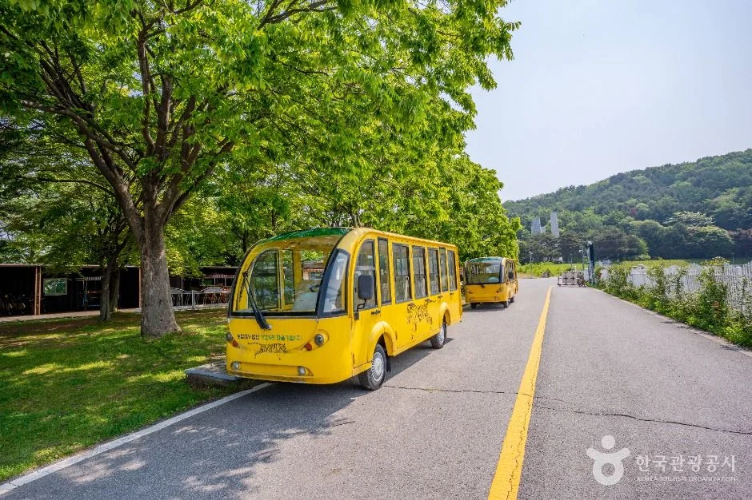
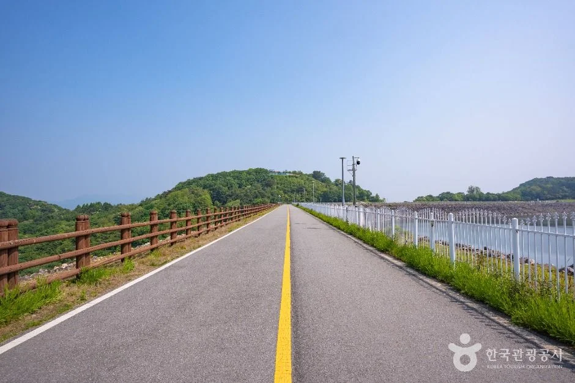
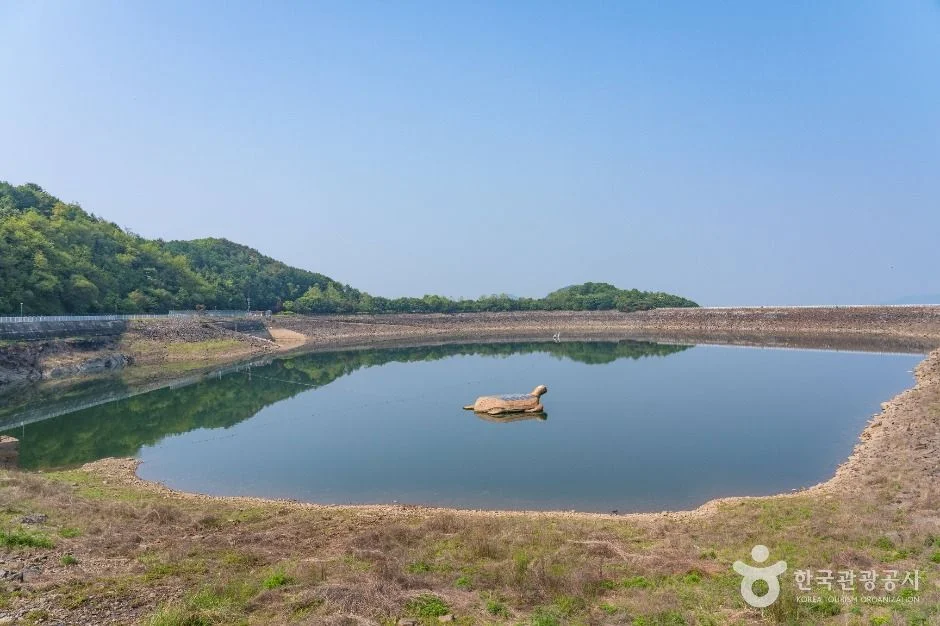
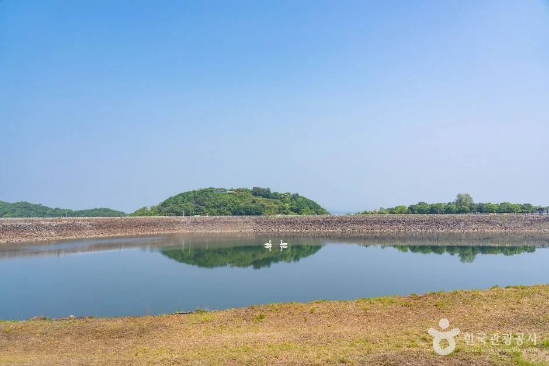
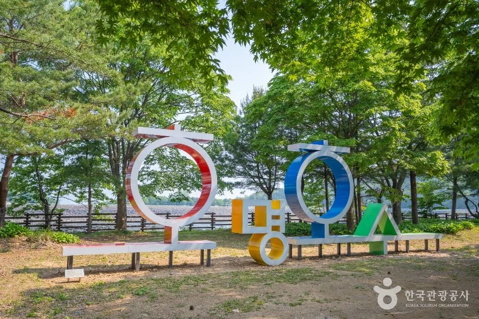
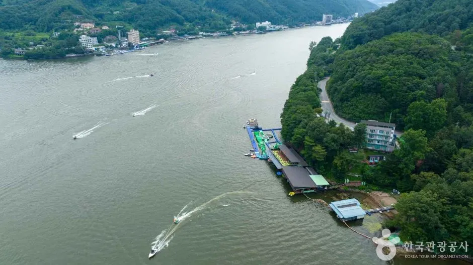
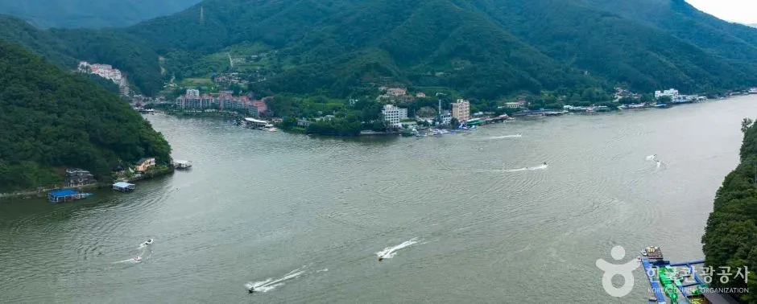

▲ 호명호수 전경. 상시 풍경 사진이며 촬영 시점은 확인되지 않았다. 사진=한국관광공사
"승용차로 호수 앞까지 올라가면 되겠지?" 가평 호명호수는 그렇게 갈 수 없는 곳이다. 해발 632m 호명산 정상 부근의 양수발전소 상부 저수지라서 자가용은 입구 주차장까지만 갈 수 있고, 그 위는 노선버스(30-4번)나 도보로 올라가야 한다. 올해는 3월 16일 개장했다. 버스 횟수는 가평군청 누리집의 2026년 안내가 가장 정확하다. 성수기(4~5월, 9~10월)에 평일은 하루 10회 그대로이고, 주말·공휴일에만 16회로 늘어난다. 11월은 비수기라 평일·주말 모두 10회다. 3월 경기일보·아시아경제 보도는 성수기를 "4~5월, 10~11월"로 전했는데, 군청 안내와 달라 이 글은 군청 안내를 따랐다. 이 글은 2026년 10월 7일에 가평군청 버스 안내·운행시간표(2026년 3월 작성), 가평 문화관광 누리집, 한국관광공사 TourAPI와 언론 보도를 대조해 올라가는 방법, 시간표, 호수 풍경, 가을 단풍을 정리했다. 현재 시점의 도로 폐쇄·공사·출입 제한 공지는 검색으로 찾지 못했다.
💡 먼저 결론
입장료 무료, 자가용은 입구 무료 공영주차장까지만, 그 위는 상천역발 노선버스 30-4번이나 도보. 공식 시간표상 정상에서 내려오는 마지막 버스는 17:40 도착 후 5분 이내 출발(제1주차장 17:50, 상천역 18:00 도착)이다. 주말·공휴일(10월 9일 한글날 포함)에는 하루 16회, 평일은 10회다. 요금은 확인하지 못했다.
1. 한눈에 보기 — 호명호수
| 항목 | 내용 | 확인 근거 |
|---|---|---|
| 위치 | 경기 가평군 청평면 상천리·호명리 일원, 호명산 자락 | 한국관광공사 TourAPI(호명호수공원). 주소는 상천리로 등록 |
| 성격 | 국내 최초 양수식 발전소의 상부 저수지(인공호수), 가평 9경 중 제2경 | TourAPI, 가평 문화관광 누리집, 경기일보(2026) |
| 고도 | 호명산 해발 632m 정상 부근 | 경기일보·아시아경제(2026.3) 동일. 535m로 적은 블로그 글은 근거 불명이라 채택하지 않았다 |
| 호수 규모 | 면적 약 15만㎡(4만5천 평), 저수량 약 267만 톤, 둘레 약 1.7~1.9km | 면적·저수량은 기호일보(2023)와 가평 문화관광 누리집(4만5천 평). 둘레는 누리집 1.7km, 경기일보(2026) 1.9km로 달라 "약 1.7~1.9km"로 표기 |
| 입장료 | 무료 | 경기일보·아시아경제(2026.3) |
| 운영 기간 | 매년 3월 중순~11월(동절기 휴장). 2026년은 3월 16일(월) 개장 | 가평군청 버스 안내, 경기일보·아시아경제(2026.3) |
| 운영 시간 | 09:00~18:00로 알려졌으나 2026년 공식 시간 표기는 찾지 못했다. TourAPI는 "버스 시간표 확인 요망"으로만 표기. 정상 막차는 공식 시간표상 17:40 도착 | 기호일보(2023), 가평군 SNS 서포터즈 글(2025), TourAPI, 가평군청 운행시간표 |
| 주차 | 가능(입구 무료 공영주차장) | TourAPI, 아시아경제 |
| 문의 | 호명호수 관광안내소·관리사무실 031-580-2062, 가평군청 관광과 031-580-2517, 버스는 가평교통㈜ 청평터미널 031-585-7242 | TourAPI, 가평 문화관광 누리집, 가평군청 버스 안내 |
| 방문객 | 2025년 약 7만 명, 2022년 1~11월 약 7만 명(10~11월 단풍철 약 2만 5천 명) | 경기일보·뉴스서울 |
가평 문화관광 누리집은 호명호수를 호명산 정상에 4만5천 평 면적, 둘레 1.7km로 조성한 호수라고 소개한다. 심야에 남는 전기로 북한강 하류의 물을 산꼭대기까지 끌어올렸다가 전기 수요가 많을 때 떨어뜨려 발전하는 양수발전소의 인공저수지이고, 길이 730m의 수로로 지하 발전기와 이어진다. 입장료는 "없음", 주차시설은 "무료 이용"으로 적혀 있다. 같은 페이지의 휴무일 항목에는 "매년 6월 둘째 주 목요일 / 동절기"라고 되어 있으나, 오래된 표기일 수 있어 현재 적용 여부는 확인하지 못했다(10월 방문과는 무관하다).
한국관광공사 TourAPI는 호명호수를 "백두산 천지를 연상시키는" 호수로, 가평읍에서 시내버스로 산유리 하차 또는 청평면 상천역 하차 후 호수까지 등산하며 경관을 즐길 수 있다고 안내한다. 공원에서는 사륜바이크와 전기차를 유료로 이용할 수 있고, 호수의 거북이는 고정물이 아니라 부유식 태양광발전설비가 바람 방향으로 움직이는 것이라고 설명한다.
▲ 호명호수 전경. 호수 둘레 제방 위로 도로가 이어진다. 녹음이 짙은 철의 풍경으로 보이며 촬영 시기는 확인되지 않아 단풍철 모습과는 다르다. 사진=한국관광공사
2. 자가용은 어디까지? — 입구 주차장과 통제
가평군 SNS 서포터즈가 2025년에 쓴 안내(가평군 공식 입장과 다를 수 있다고 명시)는 호명호수가 국가주요시설이라 자가용은 입구 무료공영주차장까지만 접근할 수 있고, 주차 뒤 주차장 입구 정류장에서 버스를 타고 올라가야 한다고 설명한다. 2026년 3월 보도에서도 "승용차 이용객은 호명호수 주차장에 세운 뒤 노선버스를 이용하거나 도보로 이동해야 한다"고 같은 취지로 전했다. 임산부는 임신 사실을 증명하는 배지나 수첩을 지참하면 정상까지 이용할 수 있다는 안내가 같은 글에 있으나 단일 출처이므로 031-580-2062로 확인해야 한다. 주차장 주소는 같은 글 기준 청평면 상천리 산 369-1이다.
| 구분 | 내용 | 근거 |
|---|---|---|
| 정상 차량 진입 | 불가(노선버스만 정상까지 운행). 입구 주차장까지만 승용차 접근 | 가평군 SNS 서포터즈 글(2025), 경기일보(2026), 기호일보(2023) |
| 주차장 요금 | 무료 공영주차장 | 아시아경제·가평군 SNS 서포터즈 글 |
| 주차장 위치 | 청평면 상천리 산 369-1(글 기준) | 공식 주소는 확인하지 못했다 |
| 주차 대수·만차 | 대수와 가을 주말 혼잡도는 확인하지 못했다 | 공식 자료 없음 |
| 예외 | 임산부 증빙 시 정상 이용 가능(단일 출처) | 031-580-2062 문의 필요 |
| 동절기 | 버스는 제1주차장까지만 운행(2024.11.27~), 도보 입장은 가능 | 에코저널(2025.3.7), 뉴스서울(2022.11.30) |
ℹ️ 제1·제2주차장 표기 차이
일부 보도·블로그는 "제1주차장", 다른 글은 "제1·2주차장"이라고 적는다. 어느 주차장에서 어떤 버스가 서는지는 공식 안내로 대조하지 못했다. 주차장 입구 정류장에서 타는 버스 시각은 상천역 출발 시각보다 10분 늦다는 안내만 확인했다.
3. 올라가는 법 ① 상천역에서 30-4번 버스
경춘선 상천역(가평군 청평면 상천역로 29)에서 호명호수까지 노선버스 30-4번이 다닌다. 가평군청 누리집의 2026년 안내(운행시간표 작성 기준 2026년 3월, 운영은 가평교통㈜)는 호명호수 개장일을 2026년 3월 16일(월)로 적고, 운행 횟수를 이렇게 정리한다.
| 시기 | 평일 | 주말·공휴일 |
|---|---|---|
| 성수기(4~5월, 9~10월) | 하루 10회 | 하루 16회(대체공휴일 포함, 추가 6회) |
| 비수기(1~3월, 6~8월, 11~12월) | 하루 10회 | 하루 10회 |
다만 경기일보·아시아경제의 3월 보도는 성수기를 "4~5월, 10~11월"로 쓰고 "기존 10회에서 16회로 확대"라고만 전했다. 군청 안내에 따르면 16회는 성수기 주말·공휴일에만 해당하고, 9월이 성수기에 들어가며 11월은 빠진다. 군청 안내 페이지의 수정일이 2026년 3월 13일로 두 보도(3월 9~11일)보다 늦다는 점도 고려해, 보도와 군청 안내가 다를 때는 군청 안내가 우선이라고 보고 이 글은 이를 따랐다. 시간표 파일 안쪽 머리글에는 "2025.3.17~", "2025.4.19 토요일부터" 같은 지난해 문구가 남아 있으나, 횟수·시각은 2026년 3월 작성 파일과 군청 페이지가 일치한다. 올해 10월 9일(금) 한글날과 주말은 16회 날짜에 해당한다. 상천역에서 정상까지는 2025년 개방 보도 기준 약 20분이며, 공식 시간표도 상천역 출발 20분 뒤를 정상 도착으로 적었다. 요금은 군청 안내와 보도에서 확인하지 못했다.
| 구분 | 상천역 출발 | 제1주차장 도착(상행) | 정상 도착 | 제1주차장(하행) | 상천역 도착 |
|---|---|---|---|---|---|
| 평일·주말 공통 1 | 08:40 | 08:50 | 09:00 | 09:10 | 09:20 |
| 평일·주말 공통 2 | 09:40 | 09:50 | 10:00 | 10:10 | 10:20 |
| 주말·공휴일 추가 | 10:20 | 10:30 | 10:40 | 10:50 | 11:00 |
| 평일·주말 공통 3 | 10:40 | 10:50 | 11:00 | 11:10 | 11:20 |
| 주말·공휴일 추가 | 11:20 | 11:30 | 11:40 | 11:50 | 12:00 |
| 평일·주말 공통 4 | 11:40 | 11:50 | 12:00 | 12:10 | 12:20 |
| 평일·주말 공통 5 | 12:40 | 12:50 | 13:00 | 13:10 | 13:20 |
| 주말·공휴일 추가 | 13:10 | 13:20 | 13:30 | 13:40 | 13:50 |
| 평일·주말 공통 6 | 13:40 | 13:50 | 14:00 | 14:10 | 14:20 |
| 주말·공휴일 추가 | 14:20 | 14:30 | 14:40 | 14:50 | 15:00 |
| 평일·주말 공통 7 | 14:40 | 14:50 | 15:00 | 15:10 | 15:20 |
| 주말·공휴일 추가 | 15:20 | 15:30 | 15:40 | 15:50 | 16:00 |
| 평일·주말 공통 8 | 15:40 | 15:50 | 16:00 | 16:10 | 16:20 |
| 주말·공휴일 추가 | 16:20 | 16:30 | 16:40 | 16:50 | 17:00 |
| 평일·주말 공통 9 | 16:40 | 16:50 | 17:00 | 17:10 | 17:20 |
| 평일·주말 공통 10(막차) | 17:20 | 17:30 | 17:40 | 17:50 | 18:00 |
"주말·공휴일 추가"는 시간표에서 음영 처리된 회차(4·5·9·10월)다. 정상에서는 도착 후 5분 이내에 다시 출발한다고 적혀 있어 마지막 하행은 정상 17:40 도착 후 약 17:45 출발, 제1주차장 17:50, 상천역 18:00 도착이다. 이 시간표는 중간의 상천4리마을회관·상천낚시터·제2주차장 정차 시각을 생략하고 적은 것이며 현장 사정으로 바뀔 수 있다. 시간표 파일 작성 기준은 2026년 3월이므로 가을 개편 여부는 가평교통㈜(031-582-6866)이나 청평터미널(031-585-7242)에 확인하자. 가평군청 버스 안내 바로가기
✅ 버스 이용 체크포인트
· 평일 첫차 08:40, 상천역 막차 17:20이라 오후 늦게 출발하면 올라갈 수 없다
· 올라가는 버스를 놓치면 다음 차까지 평일에는 40분~1시간이다
· 정상 막차(17:45경 출발)를 놓치면 내려올 때 걸어야 하고, 10월 일몰은 18시 전후라 어두워진다
· 정상 출발 후 상천역 도착까지 약 15분(17:45 출발, 18:00 도착)
· 요금은 군청 안내에서 확인하지 못했으니 탑승 전 문의

▲ 호수 둘레 도로의 노란 전기차. TourAPI는 공원에서 사륜바이크와 전기차를 유료로 이용할 수 있다고 안내한다. 요금은 확인하지 못했다. 사진=한국관광공사
4. 올라가는 법 ② 걸어서 — 호명호수길과 등산로
도보는 크게 두 갈래다. 하나는 버스와 관계 차량이 다니는 길을 따라 올라가는 가평올레길 호명호수길이고, 다른 하나는 상천역·상천농촌테마파크·호명리 마을 입구 등에서 호명산 능선으로 오르는 등산로다. 가평군 SNS 서포터즈 글은 등산이 목적이 아니라면 올레길이 가장 안전하고 편안하며 단시간에 방문할 수 있다고 했다. 소요 시간은 매체마다 다르다. 한 방문기는 올레길 편도 3.8km에 약 1시간이라고 적었고, 2023년 기호일보는 상천역에서 걸으면 약 90분이라고 했다. 출발 지점이 달라 어느 쪽이 맞다고 단정할 수 없으며 어느 구간이 가파른지도 공식 자료로 확인하지 못했다.
| 코스 | 소요 시간(보도) | 비고 |
|---|---|---|
| 주차장~호수(호명호수길) | 편도 약 3.8km, 약 1시간(한 방문기) | 출발 지점 불명, 오르막 포함 |
| 상천역~호수 | 약 90분(기호일보 2023) | 경춘선 상천역에서 출발하는 경우 |
| 청평역~호명산 정상~호수~상천역 | 약 12km, 빠르게 3~4시간·여유 있게 5~6시간 | 검색에 나온 산행 정보(단일 출처) |
| TourAPI 안내 | 상천역 하차 후 호수까지 등산하며 경관을 즐길 수 있음 | 시간 기재 없음 |
✅ 걸을 때 확인할 것
· 내려오는 막차는 정상 17:45경 출발이므로 이보다 일찍 하산 시간을 정해 두기
· 2025년 3월에는 낙석방지망 설치 공사로 개방이 1주 늦어졌다는 보도가 있었다(에코저널). 올해 가을 공사 여부는 찾지 못했다
· 산길 구간 낙석·미끄러움 안내는 현장 표지를 따를 것
· 호수 위에서 보이는 길은 제방 위 도로라 그늘이 적을 수 있다(사진으로 본 인상)

▲ 호수 둘레의 포장도로. 호수 둘레 도로는 약 1.7~1.9km로 소개되고 자전거 이용이 가능하다고 알려져 있다. 사진=한국관광공사
5. 호수 둘레와 전망 — 팔각정·태양광 거북이
정상에 올라서면 호수를 한 바퀴 도는 약 1.7~1.9km 도로가 기본 코스다(가평 문화관광 누리집 1.7km, 경기일보 1.9km). TourAPI는 "호명호수 팔각정에서 내려다보는 청평호반 역시 일품"이라고 소개한다. 경기일보는 호수 둘레에 팔각정, 전망대, 매점이 있고 자전거를 탈 수 있다고 전했다. 호수 안의 거북 모양 구조물은 부유식 태양광발전설비다. 한 방문기는 노란 자전거를 30분 단위로 빌릴 수 있다고 적었으나(1인승 3,000원~6인승 20,000원, 작성 시점 불명) 올해 요금은 확인하지 못했다. 호명호수 갤러리 카페가 호수를 내려다본다는 글도 있지만 운영 여부는 확인하지 못했다.
| 시설 | 내용 | 확인 수준 |
|---|---|---|
| 호수 둘레 도로 | 약 1.7~1.9km, 자전거 이용 가능 | 가평 문화관광 누리집(1.7km), 경기일보(2026, 1.9km) |
| 팔각정 | 팔각정에서 청평호반을 내려다볼 수 있음 | TourAPI |
| 전망대·매점 | 호수 둘레에 있다고 보도 | 경기일보(2026) |
| 태양광 거북이 | 부유식 태양광발전설비, 바람 방향으로 움직임 | TourAPI |
| 유료 탈것 | 사륜바이크·전기차(유료) | TourAPI. 요금·운영 시간 미확인 |
| 자전거 대여 | 노란 자전거 30분 단위(블로그, 작성 시점 불명) | 공식 요금은 확인하지 못했다 |

▲ 호수에 떠 있는 거북 모양 구조물. TourAPI 설명상 부유식 태양광발전설비다. 사진=한국관광공사

▲ 호수와 맞은편 제방. 가을철 수위·수색은 사진과 다를 수 있다. 사진=한국관광공사

▲ 호수 입구 쪽 글자 모양 조형물. 정확한 설치 위치는 확인하지 못했다. 사진=한국관광공사
6. 가을 풍경 — 단풍은 확인되지만 억새는 못 찾았다
가을 호명호수의 단풍은 꽤 알려져 있다. 뉴스서울이 2022년 11월 30일에 전한 바로는 그해 1~11월 방문객 약 7만 명 중 10~11월 단풍 절정기에 약 2만 5천 명이 몰렸다. TourAPI 호명산 드라이브코스 항목은 호명산 일대가 사계절 좋지만 "단풍이 있는 10월 말과 11월 초가 절정"이라고 안내한다. 산림청 예측을 전한 SBS Biz(2026년 9월 22일)는 올해 첫 단풍이 9월 14일 점봉산에서 관측됐고 10월 하순에 전국적으로 절정(단풍 50%)에 이를 것으로 전망했다. 이 보도에는 설악산 10월 20일, 속리산 10월 28일, 내장산 11월 4일 등이 나오지만 경기·가평·호명산의 개별 날짜는 없다. 억새나 은행나무 군락이 호명호수 자체에서 볼 수 있다는 공식 자료는 찾지 못했다. 이 글에 쓴 호수 사진은 모두 녹음이 짙은 철의 한국관광공사 사진이고 촬영 시기는 공개되지 않아, 가을 호수 색은 직접 확인하고 가야 한다.
| 구분 | 내용 |
|---|---|
| 코스 이름 | 호명산드라이브코스(청평면 호반로 9로 등록) |
| 단풍 절정 | 10월 말~11월 초 |
| 상지길 코스 | 가평읍과 청평면 사이 호명산을 가로지르는 가평군 상지로 78~가평읍 복장리 319-1 구간 약 12km. 구불구불하며 가끔 1~2대 주차 공간. 봄 아카시아, 가을 단풍 |
| 북한강 코스 | 청평댐 입구 교차로~가평대교~신천교차로~37번 국도~청평대교 약 30km, 산과 호수가 단풍과 어울린다고 소개 |
| 호수 진입로와의 관계 | 같은 길인지 확인하지 못했다 |
호명호수 팔각정에서 내려다보는 아래쪽이 청평호다. 호명호수는 청평호의 물을 끌어올려 쓰는 상부 저수지이고, 청평호는 청평댐으로 북한강을 막아 만든 인공호수다. 아래 사진은 한국관광공사 청평호반(설악면) 항목의 항공 사진으로, 호명호수 자체가 아니라 산 아래 청평호 풍경이다.
▲ 호명산 아래 청평호 풍경. 호명호수가 아니라 청평호반(설악면) 항목의 항공 사진이다. 사진=한국관광공사
▲ 청평호 산자락 반도 주변. 수상레저 보트가 보인다. 호명호수 정상에서 내려다보는 경치와는 시점이 다르다. 사진=한국관광공사
7. 개방 기간·안전·통제 — 알려진 사실만
호명호수는 매년 동절기에 쉰다. 2026년은 3월 16일 개방했고(경기일보·아시아경제 보도), 2025년은 낙석 방지망 설치 때문에 3월 10일 예정이 17일로 미뤄졌다는 에코저널 보도가 있다. 2024년 11월 27일부터는 버스가 제1주차장까지만 운행했고 도보 입장은 가능했다는 설명도 있다. 즉 11월 하순 이후에는 버스가 끊길 수 있다. 올해 휴장 시작일은 확인하지 못했다. 2026년 10월 현재 도로 폐쇄·공사·출입 제한을 알리는 가평군 공지는 검색으로 찾지 못했지만, 가평군 누리집 일부 페이지가 열리지 않아 공지 목록 전체를 직접 확인한 것은 아니다.
| 시점 | 내용 | 출처 |
|---|---|---|
| 2022.11 | 동절기 잠시 휴장, 도보 입장 가능 | 뉴스서울(2022.11.30) |
| 2024.11.27~ | 버스가 제1주차장까지만 운행 | 에코저널(2025.3.7) |
| 2025.3 | 낙석방지망 설치로 개방 3월 10일 예정이 17일로 연기 | 에코저널(2025.3.7) |
| 2026.3.16 | 겨울 휴장 마치고 개방, 상천역 버스 재개 | 경기일보·아시아경제(2026.3) |
| 2026.10 | 도로 폐쇄·공사·출입 제한 공지는 찾지 못했다 | 2026.10.7 검색 기준 |
8. 인근 코스 — 거리와 다른 기사로 이어서
호명호수만 보면 반나절이면 충분하지만 근처에 같은 계절에 볼 곳이 많다. 한국관광공사 TourAPI 좌표로 호명호수(경도 127.4755, 위도 37.7495)에서 직선거리를 계산하면 남이섬 약 6.8km, 자라섬 약 8.9km, 아침고요수목원 약 10.8km다. 직선거리이므로 실제 도로 거리와 이동 시간은 이보다 길고 산길을 거쳐 달라지니 내비게이션으로 확인하자. 세부 내용은 이미 쓴 기사에 있다. 남이섬 단풍 시기 기사와 남이섬 가을 즐기는 법, 국화 시즌과 예약은 아침고요수목원 기사, 차를 못 들이는 섬은 자라섬 기사에서 다뤘다.
| 장소 | 직선거리 | 비고 |
|---|---|---|
| 남이섬 | 약 6.8km | TourAPI 주소는 강원특별자치도 춘천시(남이섬길 1). 행정구역상 가평이 아니다 |
| 자라섬 | 약 8.9km | 경기 가평읍. 가을 행사 일정은 해당 기사 참고 |
| 아침고요수목원 | 약 10.8km | 경기 가평군 상면. 국화·예약은 해당 기사 참고 |

▲ 청평호의 수상레저 시설. 호명호수와는 다른 곳(설악면 청평호반)이다. 사진=한국관광공사

▲ 청평호 호반 마을 일대. 호명호수 자체 사진은 아니다. 사진=한국관광공사
✅ 출발 전 체크리스트
· 입장 무료, 자가용은 입구 무료 공영주차장까지만, 호수까지는 30-4번 버스 또는 도보
· 성수기(4~5월, 9~10월) 버스는 평일 10회, 주말·공휴일 16회(가평군청). 평일 첫차 08:40·막차 17:20, 정상 막차 17:45경 출발. 요금은 확인하지 못했다
· 문의 호명호수 관광안내소 031-580-2062, 가평교통㈜ 청평터미널 031-585-7242
· 운영 시간 09:00~18:00 안내는 2023·2025년 자료, 올해 공식 시간 표기는 미확인
· 단풍 절정은 10월 말~11월 초(TourAPI), 억새는 확인하지 못했다
· 11월 하순 이후 동절기 휴장·버스 중단 가능성
9. 정리
호명호수는 입장 무료지만 승용차는 입구 무료 공영주차장까지만 갈 수 있고, 위로는 상천역발 30-4번 버스(성수기 주말·공휴일 하루 16회, 평일 10회)나 도보로 올라가야 한다. 2026년은 3월 16일 개장했고 11월까지 운영하는 것으로 알려졌다. 호수 둘레 약 1.7~1.9km와 팔각정·태양광 거북이가 대표 볼거리다.
평일 첫차는 08:40, 상천역 막차는 17:20이고 정상 막차는 17:45경 출발한다. 단풍 절정은 TourAPI 기준 10월 말~11월 초다. 버스 요금, 정확한 주차 대수, 억새 유무는 확인하지 못했다. 도로 폐쇄·공사 공지는 찾지 못했지만 가평군청 누리집과 031-580-2062 문의를 권한다.